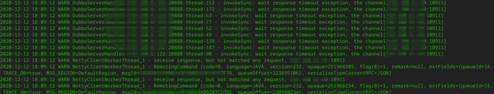
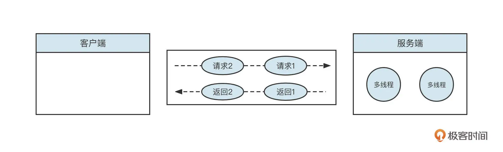
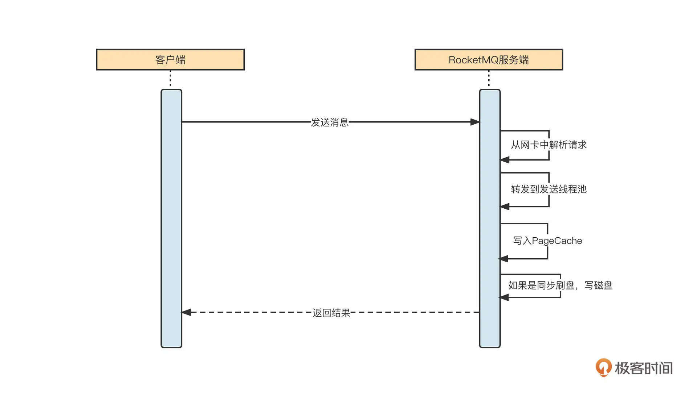
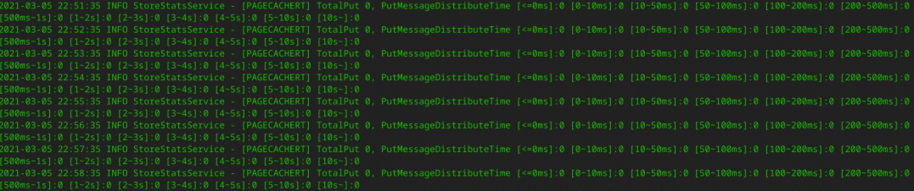
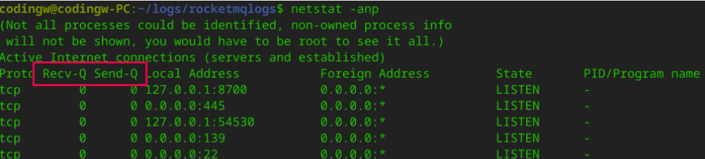
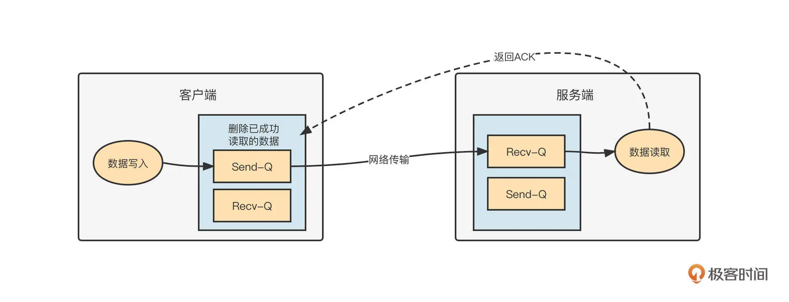
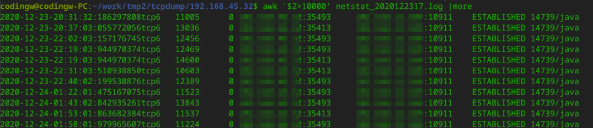
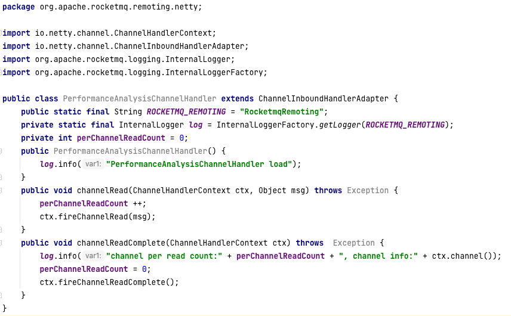
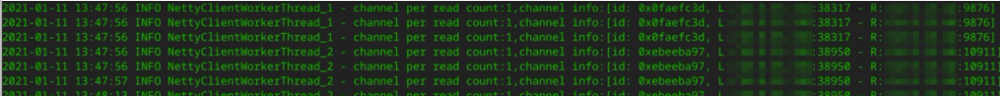
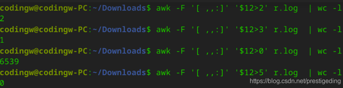

- 00 开篇词 为什么中间件对分布式架构体系来说这么重要？.md.html
- 01 中间件生态（上）：有哪些类型的中间件？.md.html
- 02 中间件生态（下）：同类型的中间件如何进行选型？.md.html
- 03 数组与链表：存储设计的基石有哪些？.md.html
- 04 红黑树：图解红黑树的构造过程与应用场景.md.html
- 05 多线程：多线程编程有哪些常见的设计模式？.md.html
- 06 锁：如何理解锁的同步阻塞队列与条件队列？.md.html
- 07 NIO：手撸一个简易的主从多Reactor线程模型.md.html
- 08 Netty：如何优雅地处理网络读写，制定网络通信协议？.md.html
- 08 加餐 中间件底层的通用设计理念.md.html
- 09 技术选型：如何选择微服务框架和注册中心？.md.html
- 10 设计原理：Dubbo核心设计原理剖析.md.html
- 11 案例：如何基于Dubbo进行网关设计？.md.html
- 12 案例：如何实现蓝绿发布？.md.html
- 13 技术选型：如何根据应用场景选择合适的消息中间件？.md.html
- 14 性能之道：RocketMQ与Kafka高性能设计对比.md.html
- 15 案例：消息中间件如何实现蓝绿？.md.html
- 16 案例：如何提升RocketMQ顺序消费性能？.md.html
- 17 运维：如何运维日均亿级的消息集群？.md.html
- 18 案例：如何排查RocketMQ消息发送超时故障？.md.html
- 19 案例：如何排查RocketMQ消息消费积压问题？.md.html
- 20 技术选型：分布式定时调度框架的功能和未来.md.html
- 21 设计理念：如何基于ZooKeeper设计准实时架构？.md.html
- 22 案例：使用分布式调度框架该考虑哪些问题？.md.html
- 23 案例：如何在生产环境进行全链路压测？.md.html
- 大咖助阵 高楼：我们应该如何学习中间件？.md.html
- 用户故事 学而时习之，不亦乐乎.md.html
- 用户故事 愿做技术的追梦人.md.html
- 用户故事 浪费时间也是为了珍惜时间.md.html
- 结束语 坚持不懈，越努力越幸运.md.html
- 捐赠
18 案例：如何排查RocketMQ消息发送超时故障？
你好，我是丁威。
不知道你在使用 RocketMQ 的时候有没有遇到过让人有些头疼的问题。我在用 RocketMQ 时遇到的最常见，也最让我头疼的问题就是消息发送超时。而且这种超时不是大面积的，而是偶尔会发生，占比在万分之一到万分之五之间。
现象与关键日志
消息发送超时的情况下，客户端的日志通常是下面这样：

我们这节课就从这些日志入手，看看怎样排查 RocketMQ 的消息发送超时故障。
首先，我们要查看 RocketMQ 相关的日志，在应用服务器上，RocketMQ 的日志默认路径为 ${USER_HOME}/logs/rocketmqlogs/ rocketmq_client.log。
在上面这张图中，有两条非常关键的日志。
- invokeSync：wait response timeout exception.
它表示等待响应结果超时。
- recive response, but not matched any request.
这条日志非常关键，它表示，尽管客户端在获取服务端返回结果时超时了，但客户端最终还是能收到服务端的响应结果，只是此时客户端已经在等待足够时间之后放弃处理了。
单一长连接如何实现多请求并发发送？
为什么第二条日志超时后还能收到服务端的响应结果，又为什么匹配不到对应的请求了呢？
我们可以详细探究一下这背后的原理。原来，这是使用单一长连接进行网络请求的编程范式。举个例子，一条长连接向服务端先后发送了两个请求，客户端在收到服务端响应结果时，需要判断这个响应结果对应的是哪个请求。

正如上图所示，客户端多个线程通过一条连接依次发送了 req1，req2 两个请求，服务端解码请求后，会将请求转发到线程池中异步执行。如果请求 2 处理得比较快，比请求 1 更早将结果返回给客户端，那客户端怎么识别服务端返回的数据对应的是哪个请求呢？
解决办法是，客户端在发送请求之前，会为这个请求生成一个本机器唯一的请求 ID（requestId），它还会采用 Future 模式，将 requestId 和 Future 对象放到一个 Map 中，然后将 reqestId 放入请求体。服务端在返回响应结果时，会将请求 ID 原封不动地放入响应结果中。客户端收到响应时，会先解码出 requestId，然后从缓存中找到对应的 Future 对象，唤醒业务线程，将返回结果通知给调用方，完成整个通信。
结合日志我发现，如果客户端在指定时间内没有收到服务端的请求，最终会抛出超时异常。但是，网络层面上客户端还是能收到服务端的响应结果。这就把矛头直接指向了 Broker 端，是不是 Broker 有瓶颈，处理慢导致的呢？
如何诊断 Broker 端内存写入性能？
我们知道消息发送时，一个非常重要的过程就是服务端写入。如果服务端出现写入瓶颈，通常会返回各种各样的 Broker Busy。我们可以简单来看一下消息发送的写入流程：

我们首先要判断的是，是不是消息写入 PageCache 或者磁盘写入慢导致的问题。我们这个集群采用的是异步刷盘机制，所以写磁盘这一环可以忽略。
然后，我们可以通过跟踪 Broker 端写入 PageCache 的数据指标来判断 Broker 有没有遇到瓶颈。具体做法是查看 RocketMQ 中的 store.log 文件，具体使用命令如下：
cd /home/codingw/logs/rocketmqlogs/store.log //其中codingw为当前rocketmq broker进程的归属用户
grep "PAGECACHERT" store.log
执行命令后，可以得到这样的结果：

这段日志记录了消息写入到 PageCache 的耗时分布。通过分析我们可以知道，写入 PageCache 的耗时都小于 100ms，所以 PageCache 的写入并没有产生瓶颈。不过，客户端可是真真切切地在 3 秒后才收到响应结果，难道是网络问题？
网络层排查通用方法
接下来我们就分析一下网络。
通常，我们可以用 netstat 命令来分析网络通信，需要重点关注网络通信中的 Recv-Q 与 Send-Q 这两个指标。
netstat 命令的执行效果如下图所示：

解释一下，这里的 Recv-Q 是 TCP 通道的接受缓存区；Send-Q 是 TCP 通道的发送缓存区。
在 TCP 中，Recv-Q 和 Send-Q 的工作机制如下图所示：

正如上图描述的那样，网络通信有下面几个关键步骤。
客户端调用网络通道时（例如 NIO 的 Channel 写入数据），数据首先是写入到 TCP 的发送缓存区，如果发送缓存区已满，客户端无法继续向该通道发送请求，从 NIO 层面调用 Channel 底层的 write 方法的时候会返回 0。这个时候在应用层面需要注册写事件，待发送缓存区有空闲时，再通知上层应用程序继续写入上次未写入的数据。
数据进入到发送缓存区后，会随着网络到达目标端。数据首先进入的是目标端的接收缓存区，如果服务端采用事件选择机制的话，通道的读事件会就绪。应用从接收缓存区成功读取到字节后，会发送 ACK 给发送方。
发送方在收到 ACK 后，会删除发送缓冲区的数据。如果接收方一直不读取数据，那发送方也无法发送数据。
运维同事分别在客户端和 MQ 服务器上，在服务器上写一个脚本，每 500ms 采集一次 netstat 。最终汇总到的采集结果如下：

从客户端来看，客户端的 Recv-Q 中出现大量积压，它对应的是 MQ 的 Send-Q 中的大量积压。
结合 Recv-Q、Send-Q 的工作机制，再次怀疑可能是客户端从网络中读取字节太慢导致的。为了验证这个观点，我修改了和 RocketMQ Client 相关的包，加入了 Netty 性能采集方面的代码：

我的核心思路是，针对每一次被触发的读事件，判断客户端会对一个通道进行多少次读取操作。如果一次读事件需要触发很多次的读取，说明这个通道确实积压了很多数据，网络读存在瓶颈。
部分采集数据如下：

我们可以通过 awk 命令对这个数据进行分析。从结果可以看出，一次读事件触发，大部分通道只要读两次就可以成功抽取读缓存区中的数据。读数据方面并不存在瓶颈。
统计分析结果如下图所示：

如此看来，瓶颈应该不在客户端，还是需要将目光转移到服务端。
从刚才的分析中我们已经看到，Broker 服务端写入 PageCache 很快。但是刚刚我们唯独没有监控“响应结果写入网络”这个环节。那是不是写入响应结果不及时，导致消息大量积压在 Netty 的写缓存区，不能及时写入到 TCP 的发送缓冲区，最终造成消息发送超时呢？
解决方案
为了验证这个设想，我最初的打算是改造代码，从 Netty 层面监控服务端的写性能。但这样做的风险比较大，所以我暂时搁置了这个计划，又认真读了一遍 RocketMQ 封装 Netty 的代码。在这之前，我一直以为 RocketMQ 的 网络层基本不需要参数优化，因为公司的服务器都是 64 核心的，而 Netty 的 IO 线程默认都是 CPU 的核数。
但这次阅读源码后我发现，RocketMQ 中和 IO 相关的线程参数有两个，分别是 serverSelectorThreads（默认值为 3）和 serverWorkerThreads（默认值为 8）。
在 Netty 中，serverSelectorThreads 就是 WorkGroup，即所谓的 IO 线程池。每一个线程池会持有一个 NIO 中的 Selector 对象用来进行事件选择，所有的通道会轮流注册在这 3 个线程中，绑定在一个线程中的所有 Channel 会串行进行网络读写操作。
我们的 MQ 服务器的配置，CPU 的核数都在 48C 及以上，用 3 个线程来做这件事显然太“小家子气”，这个参数可以调优。
RocketMQ 的网络通信层使用的是 Netty 框架，默认情况下事件的传播（编码、解码）都在 IO 线程中，也就是上面提到的 Selector 对象所在的线程。
在 RocketMQ 中 IO 线程就只负责网络读、写，然后将读取到的二进制数据转发到一个线程池处理。这个线程池会负责数据的编码、解码等操作，线程池线程数量由 serverWorkerThreads 指定。
看到这里，我开始心潮澎湃了，我感觉自己离真相越来越近了。参考 Netty 将 IO 线程设置为 CPU 核数的两倍，我的第一波优化是让 serverSelectorThreads=16，serverWorkerThreads=32，然后在生产环境中进行一波验证。
经过一个多月的验证，在集群数量逐步减少，业务量逐步上升的背景下，我们生产环境的消息发送超时比例达到了十万分之一，基本可以忽略不计。
网络超时问题的排查到这里就彻底完成了。但生产环境复杂无比，我们基本无法做到 100% 不出现超时。
比方说，虽然调整了 Broker 服务端网络的相关参数，超时问题得到了极大的缓解，但有时候还是会因为一些未知的问题导致网络超时。如果在一定时间内出现大量网络超时，会导致线程资源耗尽，继而影响其他业务的正常执行。
所以在这节课的最后我们再从代码层面介绍如何应对消息发送超时。
发送超时兜底策略
我们在应用中使用消息中间件就是看中了消息中间件的低延迟。但是如果消息发送超时，这就和我们的初衷相违背了。为了尽可能避免这样的问题出现，消息中间件领域解决超时的另一个思路是：增加快速失败的最大等待时长，并减少消息发送的超时时间，增加重试次数。
我们来看下具体做法。
- 增加 Broker 端快速失败的等待时长。这里建议为 1000。在 Broker 的配置文件中增加如下配置：
maxWaitTimeMillsInQueue=1000
- 减少超时时间，增加重试次数。
你可能会问，现在已经发生超时了，你还要减少超时时间，那发生超时的概率岂不是更大了？
这样做背后的动机是希望客户端尽快超时并快速重试。因为局域网内的网络抖动是瞬时的，下次重试时就能恢复。并且 RocketMQ 有故障规避机制，重试的时候会尽量选择不同的 Broker。
执行这个操作的代码和版本有关，如果 RocketMQ 的客户端版本低于 4.3.0，代码如下：
DefaultMQProducer producer = new DefaultMQProducer("dw_test_producer_group");
producer.setNamesrvAddr("127.0.0.1:9876");
producer.setRetryTimesWhenSendFailed(5);// 同步发送模式：重试次数
producer.setRetryTimesWhenSendAsyncFailed(5);// 异步发送模式：重试次数
producer.start();
producer.send(msg,500);//消息发送超时时间
如果客户端版本是 4.3.0 及以上版本，因为设置的消息发送超时时间是所有重试的总的超时时间，所以不能直接设置 RocketMQ 的发送 API 的超时时间，而是需要对 RocketMQ API 进行包装，例如示例代码如下：
public static SendResult send(DefaultMQProducer producer, Message msg, int
retryCount) {
Throwable e = null;
for(int i =0; i < retryCount; i ++ ) {
try {
return producer.send(msg,500); //设置超时时间，为 500ms，内部有重试机制
} catch (Throwable e2) {
e = e2;
}
}
throw new RuntimeException("消息发送异常",e);
}
总结
好了，我们这节课就介绍到这里了。
这节课，我首先抛出一个生产环境中，消息发送环节最容易遇到的问题：消息发送超时问题。我们对日志现象进行了解读，并引出了单一长连接支持多线程网络请求的原理。
整个排查过程，我首先判断了一下 Broker 写入 PageCache 是否有瓶颈，然后通过 netstat 命令，以 Recv-Q、Send-Q 两个指标为依据进行了网络方面的排查，最终定位到瓶颈可能在于服务端网络读写模型。通过研读 RocketMQ 的网络模型，我发现了两个至关重要的参数，serverSelectorThreads 和 serverWorkerThreads。其中：
serverSelectorThreads 是 RocketMQ 服务端 IO 线程的个数，默认为 3，建议设置为 CPU 核数；
serverWorkerThreads 是 RocketMQ 事件处理线程数，主要承担编码、解码等责任，默认为 8，建议设置为 CPU 核数的两倍。
通过调整这两个参数，我们极大地降低了网络超时发生的概率。
不过，发生网络超时的原因是多种多样的，所以我们还介绍了第二种方法，那就是降低超时时间，增加重试的次数，从而降低网络超时对运行时线程的影响，降低系统响应时间。
课后题
学完今天的内容，我也给你留一道课后题吧。
网络通讯在中间件领域非常重要，掌握网络排查相关的知识对线上故障分析有很大的帮助。建议你系统地学习一下 netstat 命令和网络抓包相关技能，分享一下你的经验和困惑。我们下节课见！
© 2019 - 2023 Liangliang Lee. Powered by gin and hexo-theme-book.